전기기사 (2021-05-15 기출문제)
1과목: 전기자기학
1. 전기력선의 성질에 대한 설명으로 옳은 것은?
- 전기력선은 등전위면과 평행하다.
- 전기력선은 도체 표면과 직교한다.
- 전기력선은 도체 내부에 존재할 수 있다.
- 전기력선은 전위가 낮은 점에서 높은 점으로 향한다.
(정답률: 74%)

2. 유전율 ε, 전계의 세기 E인 유전체의 단위 체적당 축적되는 정전에너지는?
- E/2ε
- εE/2
- εE2/2
- ɛ2E2/2
(정답률: 78%)
3. 와전류가 이용되고 있는 것은?
- 수중 음파 탐지기
- 레이더
- 자기 브레이크(magnetic brake)
- 사이클로트론 (cyclotron)
(정답률: 64%)
4. 전계
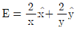
(V/m)에서 점(3,5)m를 통과하는 전기력선의 방정식은? (단,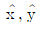
는 단위벡터이다.)- x2+y2=12
- y2-x2=12
- x2+y2=16
- y2-x2=16
(정답률: 59%)
5. 단면적이 균일한 환상철심에 권수 NA인 A코일과 권수 NB인 B코일이 있을 때, B코일의 자기 인덕턴스가 LA(H)라면 두 코일의 상호 인덕턴스(H)는? (단, 누설자속은 0이다.)
- LANA/NB
- LANB/NA
- NA/LANB
- NB/LANA
(정답률: 53%)
6. 평등자계와 직각방향으로 일정한 속도로 발사된 전자의 원운동에 관한 설명으로 옳은 것은?
- 플레밍의 오른손법칙에 의한 로렌츠의 힘과 원심력의 평형 원운동이다.
- 원의 반지름은 전자의 발사속도와 전계의 세기의 곱에 반비례한다.
- 전자의 원운동 주기는 전자의 발사 속도와 무관하다.
- 전자의 원운동 주파수는 전자의 질량에 비례한다.
(정답률: 48%)
7. 전계 E(V/m)가 두 유전체의 경계면에 평행으로 작용하는 경우 경계면에 단위면적당 작용하는 힘의 크기는 몇 N/m2인가? (단, ɛ1, ɛ2는 각 유전체의 유전율이다.)
- f=E2(ɛ1-ɛ2)
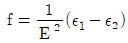
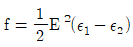
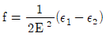
(정답률: 78%)
8. 진공 중의 평등자계 H0 중에 반지름이 a(m)이고, 투자율이 μ인 구 자성체가 있다. 이 구 자성체의 감자율은? (단, 구 자성체 내부의 자계는
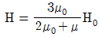
이다.)- 1
- 1/2
- 1/3
- 1/4
(정답률: 55%)
9. 진공 중에 서로 떨어져 있는 두 도체 A, B가 있다. 도체 A에만 1C의 전하를 줄 때, 도체 A, B의 전위가 각각 3V, 2V이었다. 지금 도체 A, B에 각각 1C과 2C의 전하를 주면 도체 A의 전위는 몇 V인가?
- 6
- 7
- 8
- 9
(정답률: 53%)
10. 진공 중에 놓인 Q(C)의 전하에서 발산되는 전기력선의 수는?
- Q
- ɛ0
- Q/ɛ0
- ɛ0/Q
(정답률: 73%)
11. 비투자율이 50인 환상 철심을 이용하여 100cm 길이의 자기회로를 구성할 때 자기저항을 2.0×107AT/Wb 이하로 하기 위해서는 철심의 단면적을 약 몇 m2이상으로 하여야 하는가?
- 3.6×10-4
- 6.4×10-4
- 8.0×10-4
- 9.2×10-4
(정답률: 57%)
12. 한 변의 길이가 4m인 정사각형의 루프에 1A의 전류가 흐를 때, 중심점에서의 자속밀도 B는 약 몇 Wb/m2인가?
- 2.83×10-7
- 5.65×10-7
- 11.31×10-7
- 14.14×10-7
(정답률: 55%)
13. 비투자율이 350인 환상철심 내부의 평균 자계의 세기가 342AT/m일 때 자화의 세기는 약 몇 Wb/m2인가?
- 0.12
- 0.15
- 0.18
- 0.21
(정답률: 60%)
14. 전계 (V/m)
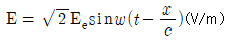
의 평면 전자파가 있다. 진공 중에서 자계의 실효값은 몇 A/m인가?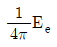
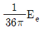
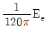
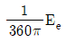
(정답률: 64%)
15. 공기 중에서 반지름 0.03m의 구도체에 줄 수 있는 최대 전하는 약 몇 C인가? (단, 이 구도체의 주위 공기에 대한 절연내력은 5×106V/m이다.)
- 5×10-7
- 2×10-6
- 5×10-5
- 2×10-4
(정답률: 51%)
16. 공기 중에서 전자기파의 파장이 3m라면 그 주파수는 몇 MHz인가?
- 100
- 300
- 1000
- 3000
(정답률: 50%)
17. 두 종류의 유전율(ɛ1, ɛ2)을 가진 유전체가 서로 접하고 있는 경계면에 진전하가 존재하지 않을 때 성립하는 경계조건으로 옳은 것은? (단, E1, E2는 각 유전체에서의 전계이고, D1, D2는 각 유전체에서의 전속밀도이고, θ1, θ2는 각각 경계면의 법선벡터와 E1, E2가 이루는 각이다.)
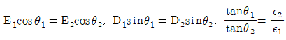
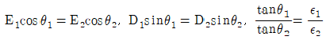
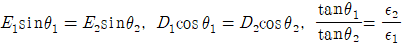
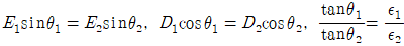
(정답률: 63%)
18. 공기 중에 있는 반지름 a(m)의 독립 금속구의 정전용량은 몇 F인가?
- 2πɛ0a
- 4πɛ0a
- 1/2πɛ0a
- 1/4πɛ0a
(정답률: 67%)
19. 자속밀도가 10Wb/m2인 자계 중에 10cm 도체를 자계와 60°의 각도로 30m/s로 움직일 때, 이 도체에 유기되는 기전력은 몇 V인가?
- 15
- 15√3
- 1500
- 1500√3
(정답률: 68%)
20. 원점에 1μC의 점전하가 있을 때 점 P(2, -2, 4)m에서의 전계의 세기에 대한 단위벡터는 약 얼마인가?
- 0.41ax-0.41ay+0.8az
- -0.33ax+0.33ay-0.6az
- -0.41ax+0.41ay-0.8az
- 0.33ax-0.33ay+0.6az
(정답률: 54%)
2과목: 전력공학
21. 가공송전선로에서 총 단면적이 같은 경우 단도체와 비교하여 복도체의 장점이 아닌 것은?
- 안정도를 증대시킬 수 있다.
- 공사비가 저렴하고 시공이 간편하다.
- 전선표면의 전위경도를 감소시켜 코로나 임계전압이 높아진다.
- 선로의 인덕턴스가 감소되고 정전용량이 증가해서 송전용량이 증대된다.
(정답률: 69%)
22. 역률 0.8(지상)의 2800kW 부하에 전력용 콘덴서를 병렬로 접속하여 합성역률을 0.9로 개선하고자 할 경우, 필요한 전력용 콘덴서의 용량(kVA)은 약 얼마인가?
- 372
- 558
- 744
- 1116
(정답률: 60%)
23. 컴퓨터에 의한 전력조류 계산에서 슬랙(slack)모선의 초기치로 지정하는 값은?
- 유효 전력과 무효 전력
- 전압 크기와 유효 전력
- 전압 크기와 위상각
- 전압 크기와 무효 전력
(정답률: 53%)
24. 3상용 차단기의 정격 차단 용량은?
- √3×정격 전압×정격 차단 전류
- 3√3×정격 전압×정격 전류
- 3×정격 전압×정격 차단 전류
- √3×정격 전압×정격 전류
(정답률: 76%)
25. 증기터빈내에서 팽창 도중에 있는 증기를 일부 추기하여 그것이 갖는 열을 급수가열에 이용하는 열사이클은?
- 랭킨사이클
- 카르노사이클
- 재생사이클
- 재열사이클
(정답률: 45%)
26. 부하전류 차단이 불가능한 전력개폐 장치는?
- 진공차단기
- 유입차단기
- 단로기
- 가스차단기
(정답률: 74%)
27. 전력계통에서 내부 이상전압의 크기가 가장 큰 경우는?
- 유도성 소전류 차단 시
- 수차발전기의 부하 차단 시
- 무부하 선로 충전전류 차단 시
- 송전선로의 부하 차단기 투입 시
(정답률: 71%)
28. 그림과 같은 송전계통에서 S점에 3상 단락사고가 발생했을 때 단락전류(A)는 약 얼마인가? (단, 선로의 길이와 리액턴스는 각각 50㎞, 0.6Ω/㎞이다.)
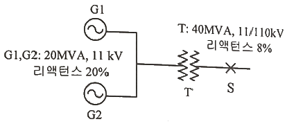
- 224
- 324
- 454
- 554
(정답률: 31%)
29. 저압배전선로에 대한 설명으로 틀린 것은?
- 저압 뱅킹 방식은 전압변동을 경감할 수 있다.
- 밸런서(balancer)는 단상 2선식에 필요하다.
- 부하율(F)와 손실계수(H) 사이에는 1≥F≥H≥F2≥0의 관계가 있다.
- 수용률이란 최대수용전력을 설비용량으로 나눈 값을 퍼센트로 나타낸 것이다.
(정답률: 69%)
30. 망상(network)배전방식의 장점이 아닌 것은?
- 전압변동이 적다.
- 인축의 접지사고가 적어진다.
- 부하의 증가에 대한 융통성이 크다.
- 무정전 공급이 가능하다.
(정답률: 71%)
31. 500kVA의 단상 변압기 상용 3대(결선 △-△), 예비 1대를 갖는 변전소가 있다. 부하의 증가로 인하여 예비 변압기까지 동원해서 사용한다면 응할 수 있는 최대부하(kVA)는 약 얼마인가?
- 2000
- 1730
- 1500
- 830
(정답률: 60%)
32. 직격뢰에 대한 방호설비로 가장 적당한 것은?
- 복도체
- 가공지선
- 서지흡수기
- 정전방지기
(정답률: 70%)
33. 최대수용전력이 3kW인 수용가가 3세대, 5kW인 수용가가 6세대라고 할 때, 이 수용가군에 전력을 공급할 수 있는 주상변압기의 최소 용량(kVA)은? (단, 역률은 1, 수용가간의 부등률은 1.3이다.)
- 25
- 30
- 35
- 40
(정답률: 64%)
34. 배전용 변전소의 주변압기로 주로 사용되는 것은?
- 강압 변압기
- 체승 변압기
- 단권 변압기
- 3권선 변압기
(정답률: 61%)
35. 비등수형 원자로의 특징에 대한 설명으로 틀린 것은?
- 증기 발생기가 필요하다.
- 저농축 우라늄을 연료로 사용한다.
- 노심에서 비등을 일으킨 증기가 직접 터빈에 공급되는 방식이다.
- 가압수형 원자로에 비해 출력밀도가 낮다.
(정답률: 49%)
36. 송전단 전압을 Vs, 수전단 전압을 Vr, 선로의 리액턴스를 X라 할 때, 정상 시의 최대 송전전력의 개략적인 값은?
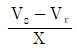
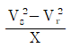
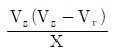
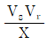
(정답률: 64%)
37. 3상 3선식 송전선로에서 각 선의 대지정전용량이 0.5096㎌이고, 선간정전용량이 0.1295㎌일 때, 1선의 작용정전용량은 약 몇 ㎌인가?
- 0.6
- 0.9
- 1.2
- 1.8
(정답률: 60%)
38. 전력계통의 전압을 조정하는 가장 보편적인 방법은?
- 발전기의 유효전력 조정
- 부하의 유효전력 조정
- 계통의 주파수 조정
- 계통의 무효전력 조정
(정답률: 58%)
39. 선로, 기기 등의 절연 수준 저감 및 전력용 변압기의 단절연을 모두 행할 수 있는 중성점 접지방식은?
- 직접접지방식
- 소호리액터접지방식
- 고저항접지방식
- 비접지방식
(정답률: 61%)
40. 단상 2선식 배전선로의 말단에 지상역률 cosθ인 부하 P(kW)가 접속되어 있고 선로말단의 전압은 V(V)이다. 선로 한 가닥의 저항을 R(Ω)이라 할 때 송전단의 공급전력(kW)은?
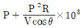
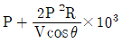
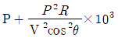
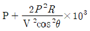
(정답률: 51%)
3과목: 전기기기
41. 부하전류가 크지 않을 때 직류 직권전동기 발생 토크는? (단, 자기회로가 불포화인 경우이다.)
- 전류에 비례한다.
- 전류에 반비례한다.
- 전류의 제곱에 비례한다.
- 전류의 제곱에 반비례한다.
(정답률: 55%)
42. 동기발전기의 병렬운전 조건에서 같지 않아도 되는 것은?
- 기전력의 용량
- 기전력의 위상
- 기전력의 크기
- 기전력의 주파수
(정답률: 72%)
43. 다이오드를 사용하는 정류회로에서 과대한 부하전류로 인하여 다이오드가 소손될 우려가 있을 때 가장 적절한 조치는 어느 것인가?
- 다이오드를 병렬로 추가한다.
- 다이오드를 직렬로 추가한다.
- 다이오드 양단에 적당한 값의 저항을 추가한다.
- 다이오드 양단에 적당한 값의 커패시터를 추가한다.
(정답률: 66%)
44. 변압기의 권수를 N이라고 할 때 누설리액턴스는?
- N에 비례한다.
- N2에 비례한다.
- N에 반비례한다.
- N2에 반비례한다.
(정답률: 64%)
45. 50Hz, 12극의 3상 유도전동기가 10HP의 정격출력을 내고 있을 때, 회전수는 약 몇 rpm인가? (단, 회전자 동손은 350W이고, 회전자 입력은 회전자 동손과 정격 출력의 합이다.)
- 468
- 478
- 488
- 500
(정답률: 42%)
46. 8극, 900rpm 동기발전기와 병렬 운전하는 6극 동기발전기의 회전수는 몇 rpm 인가?
- 900
- 1000
- 1200
- 1400
(정답률: 71%)
47. 극수가 4극이고 전기자권선이 단중 중권인 직류발전기의 전기자전류가 40A이면 전기자권선의 각 병렬회로에 흐르는 전류(A)는?
- 4
- 6
- 8
- 10
(정답률: 66%)
48. 변압기에서 생기는 철손 중 와류손(Eddy Current Loss)은 철심의 규소강판 두께와 어떤 관계에 있는가?
- 두께에 비례
- 두께의 2승에 비례
- 두께의 3승에 비례
- 두께의 1/2승에 비례
(정답률: 64%)
49. 2전동기설에 의하여 단상 유도전동기의 가상적 2개의 회전자 중 정방향에 회전하는 회전자 슬립이 s이면 역방향에 회전하는 가상적 회전자의 슬립은 어떻게 표시되는가?
- 1+s
- 1-s
- 2-s
- 3-s
(정답률: 64%)
50. 어떤 직류전동기가 역기전력 200V, 매분 1200회전으로 토크 158.76Nㆍm를 발생하고 있을 때의 전기자 전류는 약 몇 A 인가? (단, 기계손 및 철손은 무시한다.)
- 90
- 95
- 100
- 1⑤
(정답률: 49%)
51. 와전류 손실을 패러데이 법칙으로 설명한 과정 중 틀린 것은?
- 와전류가 철심 내에 흘러 발열 발생
- 유도기전력 발생으로 철심에 와전류가 흐름
- 와전류 에너지 손실량은 전류밀도에 반비례
- 시변 자속으로 강자성체 철심에 유도기전력 발생
(정답률: 59%)
52. 동기발전기에서 동기속도와 극수와의 관계를 옳게 표시한 것은? (단, N:동기속도, P:극수이다.)
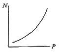
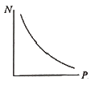
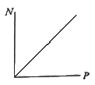
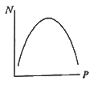
(정답률: 71%)
53. 일반적인 DC 서보모터의 제어에 속하지 않는 것은?
- 역률제어
- 토크제어
- 속도제어
- 위치제어
(정답률: 61%)
54. 변압기 단락시험에서 변압기의 임피던스 전압이란?
- 1차 전류가 여자전류에 도달했을 때의 2차측 단자전압
- 1차 전류가 정격전류에 도달했을 때의 2차측 단자전압
- 1차 전류가 정격전류에 도달했을 때의 변압기 내의 전압강하
- 1차 전류가 2차 단락전류에 도달했을 때의 변압기 내의 전압강하
(정답률: 54%)
55. 변압기의 주요 시험항목 중 전압변동률 계산에 필요한 수치를 얻기 위한 필수적인 시험은?
- 단락시험
- 내전압시험
- 변압비시험
- 온도상승시험
(정답률: 66%)
56. 단상 정류자전동기의 일종인 단상 반발전동기에 해당되는 것은?
- 시라게전동기
- 반발유도전동기
- 아트킨손형전동기
- 단상 직권 정류자전동기
(정답률: 42%)
57. 3상 농형 유도전동기의 전전압 기동토크는 전부하토크의 1.8배이다. 이 전동기에 기동보상기를 사용하여 기동전압을 전전압의 2/3로 낮추어 기동하면, 기동토크는 전부하토크 T와 어떤 관계인가?
- 3.0T
- 0.8T
- 0.6T
- 0.3T
(정답률: 54%)
58. 부스트(Boost)컨버터의 입력전압이 45V로 일정하고, 스위칭 주기가 20kHz, 듀티비(Duty ratio)가 0.6, 부하저항이 10Ω일 때 출력전압은 몇 V 인가? (단, 인덕터에는 일정한 전류가 흐르고 커패시터 출력전압의 리플성분은 무시한다.)
- 27
- 67.5
- 75
- 112.5
(정답률: 32%)
59. 동기전동기에 대한 설명으로 틀린 것은?
- 동기전동기는 주로 회전계자형이다.
- 동기전동기는 무효전력을 공급할 수 있다.
- 동기전동기는 제동권선을 이용한 기동법이 일반적으로 많이 사용된다.
- 3상 동기전동기의 회전방향을 바꾸려면 계자권선 전류의 방향을 반대로 한다.
(정답률: 53%)
60. 10kW, 3상, 380V 유도전동기의 전부하 전류는 약 몇 A 인가? (단, 전동기의 효율은 85%, 역률은 85%이다.)
- 15
- 21
- 26
- 36
(정답률: 53%)
4과목: 회로이론 및 제어공학
61. 그림의 블록선도와 같이 표현되는 제어시스템에서 A=1, B=1일 때, 블록선도의 출력 C는 약 얼마인가?
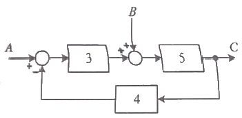
- 0.22
- 0.33
- 1.22
- 3.1
(정답률: 55%)
62. 제어요소가 제어대상에 주는 양은?
- 동작신호
- 조작량
- 제어량
- 궤환량
(정답률: 51%)
63. 다음과 같은 상태방정식으로 표현되는 제어시스템의 특성방정식의 근(s1, s2)은?
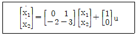
- 1, -3
- -1, -2
- -2, -3
- -1, -3
(정답률: 57%)
64. 전달함수가
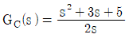
인 제어기가 있다. 이 제어기는 어떤 제어기인가?- 비례 미분 제어기
- 적분 제어기
- 비례 적분 제어기
- 비례 미분 적분 제어기
(정답률: 52%)
65. 제어시스템의 주파수 전달함수가 G(jw)=j5w이고, 주파수가 w=0.02rad/sec일 때 이 제어시스템의 이득(dB)은?
- 20
- 10
- -10
- -20
(정답률: 57%)
66. 전달함수가
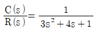
인 제어시스템의 과도 응답 특성은?- 무제동
- 부족제동
- 임계제동
- 과제동
(정답률: 48%)
67. 그림과 같은 제어시스템이 안정하기 위한 k의 범위는?
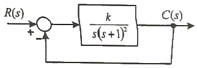
- k＞0
- k＞1
- 0＜k＜1
- 0＜k＜2
(정답률: 55%)
68. 그림과 같은 제어시스템의 폐루프 전달함수
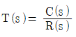
에 대한 감도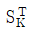
는?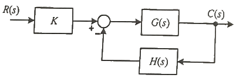
- 0.5
- 1
- G/1+GH
- -GH/1+GH
(정답률: 41%)
69. 함수 f(t)=e-at의 z변환 함수 F(z)는?
- 2z/(z-eaT)
- 1/(z+eaT)
- z/(z+e-aT)
- z/(z-e-aT)
(정답률: 57%)
70. 다음 논리회로의 출력 Y는?
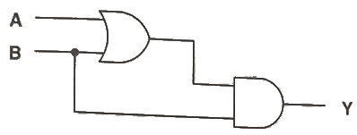
- A
- B
- A+B
- AㆍB
(정답률: 46%)
71. 회로에서 저항 1Ω에 흐르는 전류 I(A)는?
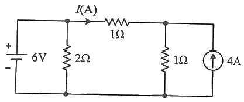
- 3
- 2
- 1
- -1
(정답률: 36%)
72. 그림과 같은 평형 3상회로에서 전원 전압이 Vab=200(V)이고 부하 한상의 임피던스가 Z=4+j3(Ω)인 경우 전원과 부하사이 선전류 Ia는 약 몇 A인가?
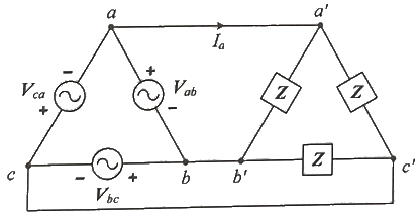
- 40√3∠36.87°
- 40√3∠-36.87°
- 40√3∠66.87°
- 40√3∠-66.87°
(정답률: 33%)
73. 전압 v(t)=14.14sinωt+7.07sin(3ωt+π/6)(V)의 실효값은 약 몇 V인가?
- 3.87
- 11.2
- 15.8
- 21.2
(정답률: 54%)
74. 그림 (a)와 같은 회로에 대한 구동점 임피던스의 극점과 영점이 각각 그림 (b)에 나타낸 것과 같고 Z(0)=1일 때, 이 회로에서 R(Ω), L(H), C(F)의 값은?
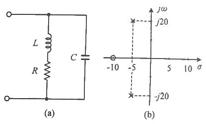
- R=1.0Ω, L=0.1H, C=0.0235F
- R=1.0Ω, L=0.2H, C=1.0F
- R=2.0Ω, L=0.1H, C=0.0235F
- R=2.0Ω, L=0.2H, C=1.0F
(정답률: 40%)
75. 파형이 톱니파인 경우 파형률은 약 얼마인가?
- 1.155
- 1.732
- 1.414
- 0.577
(정답률: 44%)
76. 정상상태에서 t=0초인 순간에 스위치 S를 열었다. 이 때 흐르는 전류 i(t)는?
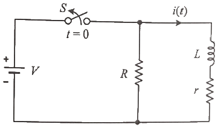
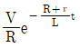
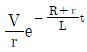
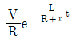
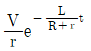
(정답률: 37%)
77. 무한장 무손실 전송선로의 임의의 위치에서 전압이 100V이었다. 이 선로의 인덕턴스가 7.5μH/m이고, 커패시턴스가 0.012㎌/m일 때 이 위치에서 전류(A)는?
- 2
- 4
- 6
- 8
(정답률: 46%)
78. 선간전압이 150V, 선전류가 10√3A, 역률이 80%인 평형 3상 유도성 부하로 공급되는 무효전력(var)은?
- 3600
- 3000
- 2700
- 1800
(정답률: 55%)
79. 그림과 같은 함수의 라플라스 변환은?
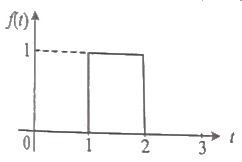
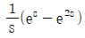
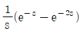
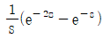
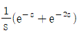
(정답률: 50%)
80. 상의 순서가 a-b-c인 불평형 3상 전류가 Ia=15+j2(A), Ib=-20-j14(A), Ic=-3+j10(A)일 때 영상분 전류 I0는 약 몇 A인가?
- 2.67+j0.38
- 2.02+j6.98
- 15.5-j3.56
- -2.67-j0.67
(정답률: 59%)
5과목: 전기설비기술기준 및 판단기준
81. 플로어덕트공사에 의한 저압 옥내배선에서 연선을 사용하지 않아도 되는 전선(동선)의 단면적은 최대 몇 mm2인가?
- 2
- 4
- 6
- 10
(정답률: 40%)
82. 전기설비기술기준에서 정하는 안전원칙에 대한 내용으로 틀린 것은?
- 전기설비는 감전, 화재 그 밖에 사람에게 위해를 주거나 물건에 손상을 줄 우려가 없도록 시설하여야 한다.
- 전기설비는 다른 전기설비, 그 밖의 물건의 기능에 전기적 또는 자기적인 장해를 주지 않도록 시설하여야 한다.
- 전기설비는 경쟁과 새로운 기술 및 사업의 도입을 촉진함으로써 전기사업의 건전한 발전을 도모하도록 시설하여야 한다.
- 전기설비는 사용목적에 적절하고 안전하게 작동하여야 하며, 그 손상으로 인하여 전기공급에 지장을 주지 않도록 시설하여야 한다.
(정답률: 67%)
83. 아파트 세대 욕실에 “비데용 콘센트”를 시설하고자 한다. 다음의 시설방법 중 적합하지 않은 것은?
- 콘센트는 접지극이 없는 것을 사용한다.
- 습기가 많은 장소에 시설하는 콘센트는 방습장치를 하여야 한다.
- 콘센트를 시설하는 경우에는 절연변압기(정격용량 3kVA 이하인 것에 한한다.)로 보호된 전로에 접속하여야 한다.
- 콘센트를 시설하는 경우에는 인체감전보호용 누전차단기(정격감도전류 15mA 이하, 동작시간 0.03초 이하의 전류동작형의 것에 한한다.)로 보호된 전로에 접속하여야 한다.
(정답률: 56%)
84. 특고압용 타냉식 변압기의 냉각장치에 고장이 생긴 경우를 대비하여 어떤 보호장치를 하여야 하는가?
- 경보장치
- 속도조정장치
- 온도시험장치
- 냉매흐름장치
(정답률: 62%)
85. 하나 또는 복합하여 시설하여야 하는 접지극의 방법으로 틀린 것은?
- 지중 금속구조물
- 토양에 매설된 기초 접지극
- 케이블의 금속외장 미 그 밖에 금속피복
- 대지에 매설된 강화콘크리트의 용접된 금속 보강재
(정답률: 43%)
86. 옥내 배선공사 중 반드시 절연전선을 사용하지 않아도 되는 공사방법은? (단, 옥외용 비닐절연전선은 제외한다.)
- 금속관공사
- 버스덕트공사
- 합성수지관공사
- 플로어덕트공사
(정답률: 42%)
87. 지중 전선로를 직접 매설식에 의하여 차량 기타 중량물의 압력을 받을 우려가 있는 장소에 시설하는 경우 매설 깊이는 몇 m이상으로 하여야 하는가?
- 0.6
- 1
- 1.5
- 2
(정답률: 58%)
88. 돌침, 수평도체, 메시도체의 요소 중에 한 가지 또는 이를 조합한 형식으로 시설하는 것은?
- 접지극시스템
- 수뢰부시스템
- 내부피뢰시스템
- 인하도선시스템
(정답률: 51%)
89. 변전소의 주요 변압기에 계측장치를 시설하여 측정하여야 하는 것이 아닌 것은?
- 역률
- 전압
- 전력
- 전류
(정답률: 63%)
90. 풍력터빈에 설비의 손상을 방지하기 위하여 시설하는 운전상태를 계측하는 계측장치로 틀린 것은?
- 조도계
- 압력계
- 온도계
- 풍속계
(정답률: 57%)
91. 일반 주택의 저압 옥내배선을 점검하였더니 다음과 같이 시설되어 있었을 경우 시설기준에 적합하지 않은 것은?
- 합성수지관의 지지점 간의 거리를 2m로 하였다.
- 합성수지관 안에서 전선의 접속점이 없도록 하였다.
- 금속관공사에 옥외용 비닐절연전선을 제외한 절연전선을 사용하였다.
- 인입구에 가까운 곳으로서 쉽게 개폐할 수 있는 곳에 개폐기를 각 극에 시설하였다.
(정답률: 40%)
92. 사용전압이 170kV 이하의 변압기를 시설하는 변전소로서 기술원이 상주하여 감시하지는 않으나 수시로 순회하는 경우, 기술원이 상주하는 장소에 경보장치를 시설하지 않아도 되는 경우는?
- 옥내변전소에 화재가 발생한 경우
- 제어회로의 전압이 현저히 저하한 경우
- 운전조작에 필요한 차단기가 자동적으로 차단한 후 재폐로한 경우
- 수소냉각식 조상기는 그 조상기 안의 수소의 순도가 90% 이하로 저하한 경우
(정답률: 47%)
93. 특고압 가공전선로의 지지물로 사용하는 B종 철주, B종 철근콘크리트주 또는 철탑의 종류에서 전선로의 지지물 양쪽의 경간의 차가 큰 곳에 사용하는 것은?
- 각도형
- 인류형
- 내장형
- 보강형
(정답률: 58%)
94. 전식방지대책에서 매설금속체측의 누설전류에 의한 전식의 피해가 예상되는 곳에 고려하여야 하는 방법으로 틀린 것은?
- 절연코팅
- 배류장치 설치
- 변전소 간 간격 축소
- 저준위 금속체를 접속
(정답률: 50%)
95. 시가지에 시설하는 사용전압 170kV 이하인 특고압 가공전선로의 지지물이 철탑이고 전선이 수평으로 2 이상 있는 경우에 전선 상호간의 간격이 4m 미만인 때에는 특고압 가공전선로의 경간은 몇 m 이하이어야 하는가?
- 100
- 150
- 200
- 250
(정답률: 33%)
96. 전압의 종별에서 교류 600V는 무엇으로 분류하는가?
- 저압
- 고압
- 특고압
- 초고압
(정답률: 60%)
97. 다음 ( )에 들어갈 내용으로 옳은 것은?
- ㉠ 아래, ㉡ 0,5
- ㉠ 아래, ㉡ 1
- ㉠ 위, ㉡ 0.5
- ㉠ 위, ㉡ 1
(정답률: 48%)
98. 사용전압이 154kV인 전선로를 제1종 특고압 보안공사로 시설할 때 경동연선의 굵기는 몇 mm2 이상이어야 하는가?
- 55
- 100
- 150
- 200
(정답률: 46%)
99. 지중 전선로에 사용하는 지중함의 시설기준으로 틀린 것은?
- 조명 및 세척이 가능한 장치를 하도록 할 것
- 견고하고 차량 기타 중량물의 압력에 견디는 구조일 것
- 그 안의 고인 물을 제거할 수 있는 구조로 되어 있을 것
- 뚜껑은 시설자 이외의 자가 쉽게 열 수 없도록 시설할 것
(정답률: 63%)
100. 고압 가공전선로의 가공지선에 나경동선을 사용하려면 지름 몇 mm 이상의 것을 사용하여야하는가?
- 2.0
- 3.0
- 4.0
- 5.0
(정답률: 53%)